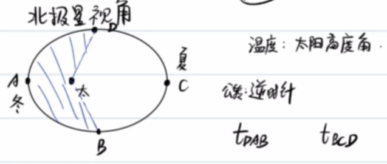
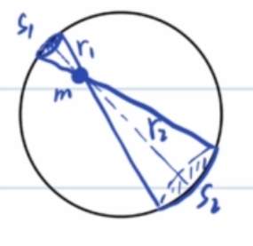
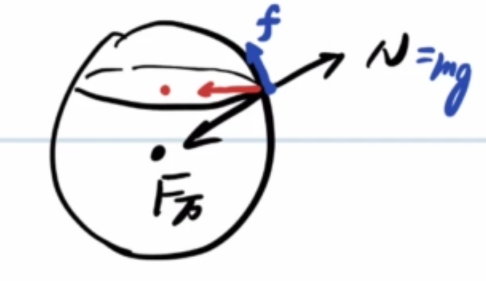
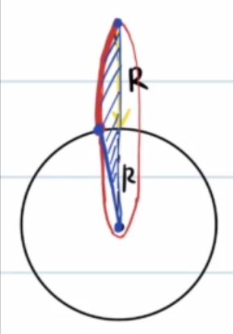
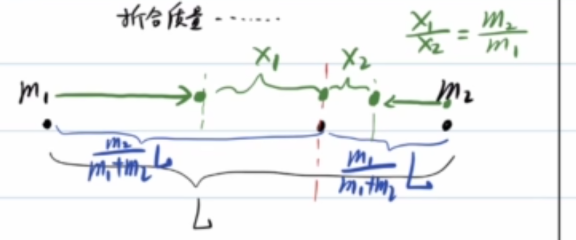
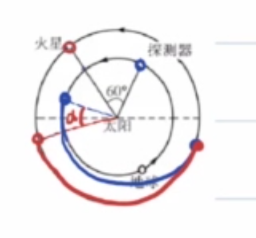
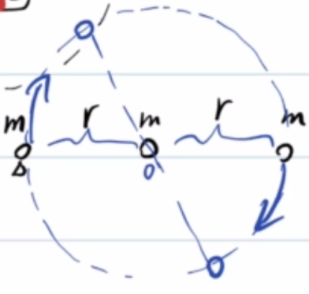
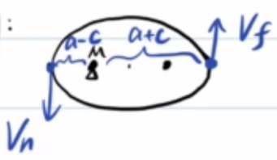

<meta data-alternate="https://freshmark.sunisalex.org/posts/physics/universal-law-of-graviation/" data-article="true" data-canonical="https://freshmark.sunisalex.org/en/posts/physics/universal-law-of-graviation/" data-description="A panoramic view of the laws of universal gravitation: from Kepler&#39;s three laws to the three major cosmic velocities, supplemented by detailed explanations of special topics and examples such as spherical shell gravity, double and triple stars, and celestial energy." data-freshmark-page data-title="Orbital Mechanics: The Law of Universal Gravitation — Freshmark"><main><header class="container article-header"><a href="/en/" class="back-link">← Back to all writing</a><p class="eyebrow article-subject">Physics</p><h1>Orbital Mechanics: The Law of Universal Gravitation</h1><p class="article-dek">A panoramic view of the laws of universal gravitation: from Kepler's three laws to the three major cosmic velocities, supplemented by detailed explanations of special topics and examples such as spherical shell gravity, double and triple stars, and celestial energy.</p><div class="article-meta"><time datetime="2026-06-07">June 7, 2026</time><span>12 min read</span><span>Physics Olympiad · Calculus</span><span class="view-count" data-article-view-count hidden>Article views <strong data-article-views></strong></span><a href="index.md" download>Download Markdown</a><button type="button" class="article-share" data-share-article data-share-text="A panoramic view of the laws of universal gravitation: from Kepler&#39;s three laws to the three major cosmic velocities, supplemented by detailed explanations of special topics and examples such as spherical shell gravity, double and triple stars, and celestial energy." data-share-title="Orbital Mechanics: The Law of Universal Gravitation"><span data-share-label>Share article</span></button><output aria-live="polite" class="visually-hidden" data-share-status role="status"></output></div></header><div class="article-wrap"><aside class="toc"><div class="toc-head"><p>On this page</p><button type="button" class="toc-toggle" aria-expanded="false" aria-label="Toggle table of contents" data-toc-toggle><span class="toc-toggle-label">Table of contents</span><span class="toc-toggle-icon" aria-hidden="true"></span></button></div><nav aria-label="Table of contents" class="toc-links" data-toc-links><a href="#history" class="toc-level-2">History</a><a href="#keplers-three-laws" class="toc-level-2">Kepler’s three laws</a><a href="#keplers-second-law" class="toc-level-3">Kepler’s second law</a><a href="#keplers-third-law" class="toc-level-3">Kepler’s third law</a><a href="#1-polaris-perspective" class="toc-level-2">1: Polaris Perspective</a><a href="#2-law-of-universal-gravity" class="toc-level-2">2: Law of Universal Gravity</a><a href="#mass-point-and-uniform-spherical-shell" class="toc-level-3">Mass point and uniform spherical shell</a><a href="#example-1" class="toc-level-3">Example 1</a><a href="#example-2" class="toc-level-3">Example 2</a><a href="#example-3" class="toc-level-3">Example 3</a><a href="#example-3-2" class="toc-level-3">Example 3'</a><a href="#example-4" class="toc-level-3">Example 4</a><a href="#example-54" class="toc-level-3">Example 5(4+)</a><a href="#example-6" class="toc-level-3">Example 6</a><a href="#double-star-problem" class="toc-level-3">Double star problem</a><a href="#samsung-problem" class="toc-level-3">Samsung problem</a><a href="#situation-1" class="toc-level-4">Situation 1</a><a href="#situation-2" class="toc-level-4">Situation 2</a><a href="#three-celestial-energy" class="toc-level-2">Three: Celestial Energy</a><a href="#gravitational-potential-energy" class="toc-level-3">Gravitational potential energy</a><a href="#proof" class="toc-level-4">Proof</a><a href="#total-energy-of-elliptical-orbit" class="toc-level-3">Total energy of elliptical orbit</a><a href="#four-cosmic-speed" class="toc-level-2">Four: Cosmic speed</a><a href="#first-cosmic-speed" class="toc-level-3">First cosmic speed</a><a href="#second-universe-speed" class="toc-level-3">Second universe speed</a><a href="#the-third-universe-speed" class="toc-level-3">The third universe speed</a><a href="#example-7" class="toc-level-3">Example 7</a><a href="#write-at-the-end" class="toc-level-2">Write at the end</a></nav></aside><article class="prose"><!--more--><h2 id="history">History</h2><p>Historically, Ptolemy proposed the <strong>geocentric theory</strong>, which believed that the earth was the center of the universe.</p><p>Later, Copernicus proposed the <strong>Heliocentric Theory</strong> through astronomical observations and other factual evidence (Westerners often believe that Copernicus/Galileo and others are the originators of science)</p><p>Generally speaking, the general process of scientific research is:</p><p><span class="math-expression math-display" data-math-source="\begin{gathered} \text{evidence/observation}\longrightarrow \text{theory}\longrightarrow \text{experiment} \end{gathered}" data-math-display></span></p><p>In order to prove the geocentric theory, Tycho conducted a large number of observations and appointed his apprentice Kepler to conduct mathematical proofs. After Tycho's death, Kepler used Tycho's data to discover <strong>Kepler's three laws</strong>, which was in line with Tycho's original intention. Going in the opposite direction</p><h2 id="keplers-three-laws">Kepler’s three laws</h2><ul><li>First law (orbital law): The trajectory of a planet around the sun is an ellipse, and the sun is at one focus of the ellipse</li><li>Second law (area law): The area swept by a planet orbiting the sun per unit time is the same</li><li>The third law (periodic law): For a planet orbiting the sun, if its semi-major axis is <span class="math-expression math-inline" data-math-source="a"></span>&#32;and the mass of the sun is <span class="math-expression math-inline" data-math-source="M"></span>, then <span class="math-expression math-inline" data-math-source="\frac{a^3}{T^2}=\frac{GM}{4\pi^2}"></span></li></ul><h3 id="keplers-second-law">Kepler’s second law</h3><p>Kepler's second law is essentially a manifestation of the conservation of angular momentum L under the action of central force:</p><p>Since the universal gravitation has a central force, the total external force moment on the sun/planetary system is zero, so there is <span class="math-expression math-display" data-math-source="\begin{gathered} L=\vec{r}\times\vec{p}=m\vec{r}\times\vec{v}=C\\ \delta=\frac{dS}{dt}=\frac{\frac{1}{2}rvdt\sin\theta}{dt}=\frac{1}{2}|\vec{r}\times\vec{v}|=\frac{1}{2}C \end{gathered}" data-math-display></span></p><p>Conclusion: Conservation of angular momentum is equivalent to Kepler’s second law (essentially&lt;-&gt;a necessary and sufficient condition)</p><h3 id="keplers-third-law">Kepler’s third law</h3><p>Here is a loose proof:</p><p>Assume that the elliptical orbit degenerates into a circle, then the semi-major axis degenerates into the orbit radius</p><p><span class="math-expression math-display" data-math-source="\begin{gathered} \frac{GMm}{R^2}=m\frac{4\pi^2}{T^2}R\\ \frac{R^3}{T^2}=\frac{GM}{4\pi^2} \end{gathered}" data-math-display></span></p><h2 id="1-polaris-perspective">1: Polaris Perspective</h2><p><picture class="responsive-picture"><source srcset="image.freshmark-171bab54b3d9-480w.avif 480w, image.freshmark-171bab54b3d9-637w.avif 637w" type="image/avif"><source srcset="image.freshmark-171bab54b3d9-480w.webp 480w, image.freshmark-171bab54b3d9-637w.webp 637w" type="image/webp"></picture></p><p>Looking at the Earth from the North Star, the Earth rotates counterclockwise and revolves around the sun counterclockwise.</p><p>On the <strong>summer solstice</strong> in the northern hemisphere, the earth is at <strong>aphelion</strong>; on the <strong>winter solstice</strong> in the northern hemisphere, the earth is at <strong>perihelion</strong>.</p><p>The difference in temperature mainly comes from <strong>solar altitude angle</strong></p><p>From Kepler’s second law, it is not difficult to derive <span class="math-expression math-inline" data-math-source="S_{DAB}\lt S_{BCD},t_{DAB}\lt t_{BCD}"></span></p><h2 id="2-law-of-universal-gravity">2: Law of Universal Gravity</h2><p>For two mass points with masses <span class="math-expression math-inline" data-math-source="M,m"></span>&#32;respectively: <span class="math-expression math-display" data-math-source="\boxed{F=\frac{GMm}{r^2}}" data-math-display></span> <span class="math-expression math-display" data-math-source="G=6.67\times 10^{-11}N\cdot m^2\cdot kg^{-2}" data-math-display></span> Among them, the definition of mass of <span class="math-expression math-inline" data-math-source="M,m"></span>&#32;can be derived from the definition of inertia or the definition of gravity.</p><p>The situation of non-particles is as follows:</p><p><picture class="responsive-picture"><source srcset="image-1.freshmark-863d39846604-480w.avif 480w, image-1.freshmark-863d39846604-761w.avif 761w" type="image/avif"><source srcset="image-1.freshmark-863d39846604-480w.webp 480w, image-1.freshmark-863d39846604-761w.webp 761w" type="image/webp"></picture></p><h3 id="mass-point-and-uniform-spherical-shell">Mass point and uniform spherical shell</h3><p></p><p>Assuming the surface density of a uniform spherical shell <span class="math-expression math-inline" data-math-source="\rho"></span>, we consider the pairing of mass elements:</p><p><span class="math-expression math-display" data-math-source="\begin{gathered} F_1=\frac{G\rho S_1m}{r_1^2}\\ F_2=\frac{G\rho S_2m}{r_2^2}\\ \frac{S_1}{S_2}=\frac{r_1^2}{r_2^2}\\ F_1=F_2 \end{gathered}" data-math-display></span></p><p>It can be seen that the resultant gravitational force of all spherical shell elements on the internal particles is 0.</p><h3 id="example-1">Example 1</h3><p><picture class="responsive-picture"><source srcset="image-3.freshmark-59ad68401f19-368w.avif 368w" type="image/avif"><source srcset="image-3.freshmark-59ad68401f19-368w.webp 368w" type="image/webp"></picture></p><p>For a homogeneous sphere A with a total mass M and a radius R, cut out a small ball B with the radius R as the diameter and place it on the right side of the larger ball so that the center of the circle B is on the straight line of the cut radius and the distance between the two closest points is R. Find the force between A and B.</p><p>Consider completing A as an imaginary ball A':</p><p><span class="math-expression math-display" data-math-source="F=\frac{GM\frac{M}{8}}{(\frac{5}{2}R)^2}-\frac{G\frac{M}{8}\frac{M}{8}}{(2R)^2}" data-math-display></span></p><h3 id="example-2">Example 2</h3><p>Calculate the motion parameters of near-Earth satellites, synchronous satellites, and residents on the equator:</p><p><span class="math-expression math-display" data-math-source="\begin{gathered} \frac{GMm}{R^2}=m\frac{4\pi^2}{T_{\text{near}}^2}R\\ T_{\text{near}}=84min \end{gathered}" data-math-display></span></p><p><span class="math-expression math-display" data-math-source="\begin{gathered} \frac{GMm}{R_{\text{geo}}^2}=m\frac{4\pi^2}{T^2}R_{\text{geo}}\\ R_{\text{geo}}\approx 7R \end{gathered}" data-math-display></span></p><p>For residents on the equator, the situation is different: <span class="math-expression math-display" data-math-source="\begin{gathered} \frac{GMm}{R^2}-N=m\frac{4\pi^2}{T^2}R\\ N=G=mg=\frac{GMm}{R^2}-m\frac{4\pi^2}{T^2}R \end{gathered}" data-math-display></span></p><p>From this point of view, gravity G is a component of universal gravitation.</p><p>The scale can never reflect the gravitational force on a person (unless you are a polar bear standing at the North Pole), the scale shows <strong>weightN</strong></p><p>Estimate the magnitude of the centripetal force I experience on the equator:</p><p><span class="math-expression math-display" data-math-source="\begin{gathered} F_n=m\frac{4\pi^2}{T^2}R\\=75\frac{4\pi^2}{(86400)^2}(6400\times10^3)\approx 2.5N \end{gathered}" data-math-display></span></p><p>Compared with the gravity of approximately 750N, the centripetal force is insignificant.</p><p><picture class="responsive-picture"><source srcset="image-4.freshmark-5e670ba59b3e-480w.avif 480w, image-4.freshmark-5e670ba59b3e-486w.avif 486w" type="image/avif"><source srcset="image-4.freshmark-5e670ba59b3e-480w.webp 480w, image-4.freshmark-5e670ba59b3e-486w.webp 486w" type="image/webp"></picture></p><p>If I am not on the equator, then in order to maintain circular motion around the earth's axis, I will also experience a frictional force f from the ground.</p><p>It is easy to know that the higher the latitude, the closer the apparent gravity is to the universal gravitation, and the gravity acceleration is greater.</p><p>(<s>There should be a spring scale detective story here?</s>)</p><hr><p>In short, if we ignore the rotation of the earth, we have:</p><p><span class="math-expression math-display" data-math-source="\begin{gathered} \frac{GMm}{R^2}=mg\\ GM=gR^2 \end{gathered}" data-math-display></span></p><p>Foreign textbooks call it the Golden Rule, so the Chinese call it Golden Substitution (<s>Where is the gold?</s>)</p><h3 id="example-3">Example 3</h3><p>Assume that the period of the near-Earth satellite is T, find the average density of the earth <span class="math-expression math-inline" data-math-source="\rho"></span></p><p><span class="math-expression math-display" data-math-source="\begin{gathered} \frac{GMm}{R^2}=m\frac{4\pi^2}{T^2}R\\ \frac{M}{R^3}=\frac{4\pi^2}{GT^2}=\frac{4}{3}\pi\rho\\ \rho=\frac{3\pi}{GT^2} \end{gathered}" data-math-display></span></p><h3 id="example-3-2">Example 3'</h3><p>The period of the neutron star pulse is about <span class="math-expression math-inline" data-math-source="T=\frac{1}{30}s"></span>, estimate its density <span class="math-expression math-display" data-math-source="\rho=\frac{3\pi}{GT^2}\approx 1.3\times10^{15}kg/m^3" data-math-display></span></p><blockquote><p>This section was added by Claude, an AI model made by Anthropic, after the author's solution. It is not written by the original author.</p></blockquote><p><strong>Erratum (added by Claude)</strong> The number is off by an order of magnitude: <span class="math-expression math-inline" data-math-source="GT^2=6.67\times10^{-11}\times\dfrac{1}{900}\approx7.41\times10^{-14}"></span>, so</p><p><span class="math-expression math-display" data-math-source="\rho=\frac{3\pi}{GT^2}\approx\frac{9.42}{7.41\times10^{-14}}\approx1.3\times10^{14}\ \text{kg/m}^3" data-math-display></span></p><p>Strictly speaking this is a <strong>lower bound</strong>: for surface matter not to be flung off by the rotation, the star needs <span class="math-expression math-inline" data-math-source="\rho\ge\dfrac{3\pi}{GT^2}"></span>.</p><h3 id="example-4">Example 4</h3><p>Release a particle from a point R above the earth's surface (R is the radius of the earth), and find the time to reach the ground <span class="math-expression math-inline" data-math-source="t"></span>.</p><p>It is not difficult to see that the moment of release is <span class="math-expression math-inline" data-math-source="a_0=\frac{1}{4}g"></span>&#32;and the moment of landing is <span class="math-expression math-inline" data-math-source="a_t=g"></span>. Obviously, the uniform acceleration motion formula cannot be used at this time.</p><p>Ellipses have two degenerate consequences:</p><ul><li>Circle(<span class="math-expression math-inline" data-math-source="e\to 0"></span>)</li><li>Line segment (<span class="math-expression math-inline" data-math-source="e\to 1"></span>)</li></ul><p></p><p>The situation in Example 4 is equivalent to the ellipse degenerating into a line segment (<span class="math-expression math-inline" data-math-source="e\to 1,a\to R"></span>), then Kepler's second/third law can be used to calculate the motion time.</p><p>Here are all the relevant formulas we know about: <span class="math-expression math-display" data-math-source="\begin{gathered} \delta=\frac{dS}{dt}\\ T=\frac{S}{\delta}\\ S=\pi ab\\ \frac{T^2}{a^3}=\frac{4\pi^2}{GM} \end{gathered}" data-math-display></span></p><p>So we can get: <span class="math-expression math-display" data-math-source="\begin{gathered} T=\sqrt{\frac{4\pi^2R^3}{GM}}\\ \frac{t}{T}=\frac{S&#39;}{S}\\ S&#39;=\frac{1}{4}\pi ab+\frac{1}{2}ab,S=\pi ab\\ t=T\frac{\pi+2}{4\pi}=\frac{\pi+2}{4\pi}\sqrt{\frac{4\pi^2R^3}{GM}}\\ =\frac{\pi+2}{2}\sqrt{\frac{R^3}{GM}} \end{gathered}" data-math-display></span></p><h3 id="example-54">Example 5(4+)</h3><p>Two particles with mass <span class="math-expression math-inline" data-math-source="m_1,m_2"></span>&#32;and distance <span class="math-expression math-inline" data-math-source="L"></span>&#32;are released from rest at the same time. Find the time it takes for the two to meet <span class="math-expression math-inline" data-math-source="t"></span>.</p><p>It is not difficult to see that the total external force on the system is 0, the centers of mass of the two are stationary, and the place where the two collide is the center of mass.</p><p>Method 1: Based on relative acceleration, obtain a reduced mass.</p><p>Method 2: Equivalence method</p><p><picture class="responsive-picture"><source srcset="image-7.freshmark-b8863d839d86-480w.avif 480w, image-7.freshmark-b8863d839d86-576w.avif 576w" type="image/avif"><source srcset="image-7.freshmark-b8863d839d86-480w.webp 480w, image-7.freshmark-b8863d839d86-576w.webp 576w" type="image/webp"></picture></p><p>Defined by the center of mass: <span class="math-expression math-inline" data-math-source="m_1x_1=m_2x_2"></span>, where <span class="math-expression math-inline" data-math-source="x_1,x_2"></span>&#32;is the distance from the two mass points to the center of mass.</p><p>Note that <span class="math-expression math-inline" data-math-source="F_{ab}"></span>&#32;is the force a receives from b, then:</p><p><span class="math-expression math-display" data-math-source="\begin{gathered} F_{12}=\frac{Gm_1m_2}{(x_1+x_2)^2}=\frac{Gm_1m_2}{(x_1+\frac{m_1}{m_2}x_1)^2}\\ =\frac{G\frac{m_2^3}{(m_1+m_2)^2}m_1}{x_1^2} \end{gathered}" data-math-display></span></p><p>Then, the gravitational force of <span class="math-expression math-inline" data-math-source="m_2"></span>&#32;suffered by <span class="math-expression math-inline" data-math-source="m_1"></span>&#32;can be regarded as the gravitational force of the particle with mass <span class="math-expression math-inline" data-math-source="\frac{m_2^3}{(m_1+m_2)^2}"></span>&#32;at point O on <span class="math-expression math-inline" data-math-source="m_1"></span>.</p><p>Therefore, Example 5 is transformed into the closed case of Example 4.</p><p><span class="math-expression math-inline" data-math-source="m_1"></span>&#32;Initial distance to center of mass <span class="math-expression math-inline" data-math-source="d_1=\frac{m_2}{m_1+m_2}L"></span></p><p>From Kepler's second/third law <span class="math-expression math-display" data-math-source="\begin{gathered} \frac{(\frac{d_1}{2})^3}{T^2}=\frac{GM}{4\pi^2}\\ T=\sqrt{\frac{4\pi^2(\frac{d_1}{2})^3}{GM}}=\pi\sqrt{\frac{d_1^3}{2GM}}\\ t=\frac{1}{2}T=\pi \sqrt{\frac{(\frac{m_2}{m_1+m_2}L)^3}{8G(\frac{m_2^3}{(m_1+m_2)^2})}}\\ =\pi\sqrt{\frac{L^3}{8G(m_1+m_2)}} \end{gathered}" data-math-display></span></p><h3 id="example-6">Example 6</h3><p><picture class="responsive-picture"><source srcset="Screenshot_20260607-174330_%E4%BD%9C%E4%B8%9A%E5%B8%AE.freshmark-bcb88e5bac49-480w.avif 480w, Screenshot_20260607-174330_%E4%BD%9C%E4%B8%9A%E5%B8%AE.freshmark-bcb88e5bac49-960w.avif 960w, Screenshot_20260607-174330_%E4%BD%9C%E4%B8%9A%E5%B8%AE.freshmark-bcb88e5bac49-1264w.avif 1264w" type="image/avif"><source srcset="Screenshot_20260607-174330_%E4%BD%9C%E4%B8%9A%E5%B8%AE.freshmark-bcb88e5bac49-480w.webp 480w, Screenshot_20260607-174330_%E4%BD%9C%E4%B8%9A%E5%B8%AE.freshmark-bcb88e5bac49-960w.webp 960w, Screenshot_20260607-174330_%E4%BD%9C%E4%B8%9A%E5%B8%AE.freshmark-bcb88e5bac49-1264w.webp 1264w" type="image/webp"></picture>Semi-major axis of semi-elliptical orbit <span class="math-expression math-inline" data-math-source="a=\frac{R_m+R_0}{2}=1.25R_0"></span></p><p></p><p>After a little analysis, it can be seen that the angular distance between the probe and Mars <span class="math-expression math-inline" data-math-source="\alpha"></span>&#32;is constantly shrinking.</p><p>Then, we only need to make the time when Mars moves at <span class="math-expression math-inline" data-math-source="\pi-\alpha"></span>&#32;angle and the detector moves at <span class="math-expression math-inline" data-math-source="\pi"></span>&#32;angle the same.</p><p>For the convenience of description, the Earth, Mars, and the probe are called (e)arth, (m)ars, and (r)over respectively. <span class="math-expression math-display" data-math-source="\begin{gathered} T_e=365 day\\ T_m=T_e\sqrt{1.5^3}=671 day\\ T_r=T_e\sqrt{1.25^3}=510 day\\ \frac{1}{2}T_r=255 day\\ \frac{\pi-\alpha}{2\pi}T_m=\frac{1}{2}T_r\\ \alpha=\frac{161}{671}\pi\\ \frac{\pi}{3}-\alpha=(\frac{2\pi}{T_e}-\frac{2\pi}{T_m})t\\ t\approx 37day \end{gathered}" data-math-display></span></p><p>If 0:00 on March 1 is pushed back 30 days, it will be 0:00 on March 31, and if it is pushed back 37 days, it will be 0:00 on April 7.</p><p>So <strong>fire on April 7th</strong>.</p><h3 id="double-star-problem">Double star problem</h3><p>Assume that the motion between two particles with masses both of <span class="math-expression math-inline" data-math-source="m"></span>&#32;reaches stability, the distance between them is <span class="math-expression math-inline" data-math-source="l"></span>, the total external force of the system is 0, momentum is conserved, and the center of mass does not move.</p><p><span class="math-expression math-display" data-math-source="\begin{gathered} G\frac{mm}{l^2}=m\frac{4\pi^2}{T^2}\frac{l}{2}\\ T=2\pi\sqrt{\frac{l^3}{G(2m)}} \end{gathered}" data-math-display></span></p><p><picture class="responsive-picture"><source srcset="image-9.freshmark-ed9a3c12693e-372w.avif 372w" type="image/avif"><source srcset="image-9.freshmark-ed9a3c12693e-372w.webp 372w" type="image/webp"></picture></p><p>Generally speaking, if the masses of two particles are <span class="math-expression math-inline" data-math-source="m_1,m_2"></span>&#32;respectively, then the distance from the center of mass to <span class="math-expression math-inline" data-math-source="m_1"></span>&#32;is <span class="math-expression math-inline" data-math-source="\frac{m_2}{m_1+m_2}l"></span></p><p><span class="math-expression math-display" data-math-source="\begin{gathered} G\frac{m_1m_2}{l^2}=m_1\frac{4\pi^2}{T^2}\frac{m_2}{m_1+m_2}l\\ T=2\pi\sqrt{\frac{l^3}{G(m_1+m_2)}} \end{gathered}" data-math-display></span></p><h3 id="samsung-problem">Samsung problem</h3><h4 id="situation-1">Situation 1</h4><p><picture class="responsive-picture"><source srcset="image-10.freshmark-3471f92aaca9-392w.avif 392w" type="image/avif"><source srcset="image-10.freshmark-3471f92aaca9-392w.webp 392w" type="image/webp"></picture></p><p><span class="math-expression math-display" data-math-source="\frac{Gmm}{r^2}+\frac{Gmm}{(2r)^2}=m\frac{4\pi^2}{T^2}r" data-math-display></span></p><h4 id="situation-2">Situation 2</h4><p><picture class="responsive-picture"><source srcset="image-11.freshmark-020cb4148aa5-380w.avif 380w" type="image/avif"><source srcset="image-11.freshmark-020cb4148aa5-380w.webp 380w" type="image/webp"></picture></p><p><span class="math-expression math-display" data-math-source="2\frac{\sqrt{3}}{2}\frac{Gmm}{(\sqrt{3}r)^2}=m\frac{4\pi^2}{T^2}r" data-math-display></span></p><h2 id="three-celestial-energy">Three: Celestial Energy</h2><h3 id="gravitational-potential-energy">Gravitational potential energy</h3><p>Assuming that infinity is the zero point of potential energy, then the gravitational potential energy between particles with mass <span class="math-expression math-inline" data-math-source="M,m"></span>&#32;is:</p><p><span class="math-expression math-display" data-math-source="\boxed{E=-\frac{GMm}{r}=-W}" data-math-display></span></p><p>Among them, <span class="math-expression math-inline" data-math-source="W"></span>&#32;is the work done by gravity when <span class="math-expression math-inline" data-math-source="m"></span>&#32;moves from the infinite point to <span class="math-expression math-inline" data-math-source="r"></span>.</p><h4 id="proof">Proof</h4><p><span class="math-expression math-display" data-math-source="\begin{gathered} W=\int_{\infty}^{r}\frac{GMm}{r^2}dr=\frac{GMm}{r} \end{gathered}" data-math-display></span></p><p>This is a typical <strong>abnormal integral</strong></p><p>Or consider micro-element method accumulation:</p><p><span class="math-expression math-display" data-math-source="\begin{gathered} \Delta W_1=\frac{GMm}{r_1r_2}(r_2-r_1)=GMm(\frac{1}{r_1}-\frac{1}{r_2})\\ \Delta W_2=\frac{GMm}{r_2r_3}(r_3-r_2)=GMm(\frac{1}{r_2}-\frac{1}{r_3})\\ ...\\ \sum \Delta W=GMm(\frac{1}{r_1}-\frac{1}{r_n})\\ =\int_{\infty}^{r}\frac{GMm}{r^2}dr=\frac{GMm}{r} (r_1\to \infty,r_n=r) \end{gathered}" data-math-display></span></p><blockquote><p>This section was added by Claude, an AI model made by Anthropic, after the author's solution. It is not written by the original author.</p></blockquote><p><strong>Correction (added by Claude)</strong> Both versions have a sign slip. Gravity points along <span class="math-expression math-inline" data-math-source="-\hat r"></span>, so its radial component is <span class="math-expression math-inline" data-math-source="-\dfrac{GMm}{r^2}"></span>:</p><p><span class="math-expression math-display" data-math-source="W=\int_{\infty}^{r}\left(-\frac{GMm}{r&#39;^2}\right)dr&#39;=\frac{GMm}{r}" data-math-display></span></p><p>As written, <span class="math-expression math-inline" data-math-source="\int_\infty^r\frac{GMm}{r^2}dr"></span>&#32;actually equals <span class="math-expression math-inline" data-math-source="-\dfrac{GMm}{r}"></span>. In the summation, moving from <span class="math-expression math-inline" data-math-source="r_1"></span>&#32;to <span class="math-expression math-inline" data-math-source="r_2"></span>&#32;(<span class="math-expression math-inline" data-math-source="r_1&gt;r_2"></span>) is a displacement of <span class="math-expression math-inline" data-math-source="r_1-r_2"></span>, so <span class="math-expression math-inline" data-math-source="\Delta W_1=GMm\left(\dfrac1{r_2}-\dfrac1{r_1}\right)&gt;0"></span>. Summing gives <span class="math-expression math-inline" data-math-source="GMm\left(\dfrac1{r_n}-\dfrac1{r_1}\right)\to\dfrac{GMm}{r}"></span>, consistent with <span class="math-expression math-inline" data-math-source="E_p=-W=-\dfrac{GMm}{r}"></span>.</p><h3 id="total-energy-of-elliptical-orbit">Total energy of elliptical orbit</h3><p>Proof: The total energy of an elliptical orbit</p><p><span class="math-expression math-display" data-math-source="\boxed{E=E_k+E_p=-\frac{GMm}{2a}}" data-math-display></span></p><p>According to the conservation of mechanical energy, just calculate the mechanical energy at any point on the orbit.</p><p><picture class="responsive-picture"><source srcset="image-12.freshmark-b4408588884a-341w.avif 341w" type="image/avif"><source srcset="image-12.freshmark-b4408588884a-341w.webp 341w" type="image/webp"></picture></p><p>Suppose the perihelion (n) ear speed is <span class="math-expression math-inline" data-math-source="v_n"></span>&#32;and the aphelion (f) ar speed is <span class="math-expression math-inline" data-math-source="v_f"></span>.</p><p><span class="math-expression math-display" data-math-source="\begin{gathered} E=\frac{1}{2}mv_n^2+(-\frac{GMm}{a-c})\\ =\frac{1}{2}mv_f^2+(-\frac{GMm}{a+c})\\ L=mv_n(a-c)=mv_f(a+c)\\ \Longrightarrow \frac{1}{2}mv_f^2(\frac{a+c}{a-c})^2+(-\frac{GMm}{a-c})=\frac{1}{2}mv_f^2+(-\frac{GMm}{a+c})\\ \Longrightarrow \begin{cases} v_f^2=GM(\frac{a-c}{a+c})\frac{1}{a},\\ v_n^2=GM(\frac{a+c}{a-c})\frac{1}{a} \end{cases}\\ E=\frac{1}{2}mGM(\frac{a+c}{a-c})\frac{1}{a}+(-\frac{GMm}{a+c})\\ =-\frac{GMm}{2a} \end{gathered}" data-math-display></span></p><p>Obviously, among various Conic Sections, ellipses (closed curves) have the smallest energy, and unclosed curves have greater energy.</p><ul><li>Ellipse: <span class="math-expression math-inline" data-math-source="E\lt0"></span></li><li>Parabola: <span class="math-expression math-inline" data-math-source="E=0"></span></li><li>Hyperbola: <span class="math-expression math-inline" data-math-source="E=\frac{GMm}{2a}\gt0"></span></li></ul><h2 id="four-cosmic-speed">Four: Cosmic speed</h2><p><strong>Cosmic velocity</strong>: <strong>different initial velocities</strong> required to launch satellites from the earth's surface to <strong>achieve different effects</strong></p><h3 id="first-cosmic-speed">First cosmic speed</h3><p><span class="math-expression math-inline" data-math-source="v_1"></span>&#32;=7.9km/s, also known as <strong>orbiting speed</strong></p><p><span class="math-expression math-display" data-math-source="\frac{GMm}{R^2}=m\frac{v_1^2}{R},v_1=\sqrt{gr}" data-math-display></span></p><h3 id="second-universe-speed">Second universe speed</h3><p><span class="math-expression math-inline" data-math-source="v_2=11.2km/s"></span>, also known as <strong>breakaway speed</strong></p><p><span class="math-expression math-display" data-math-source="E=\frac{1}{2}mv_2^2+(-\frac{GMm}{R})=0,v_2=\sqrt{2gr}=\sqrt{2}v_1" data-math-display></span></p><h3 id="the-third-universe-speed">The third universe speed</h3><p><span class="math-expression math-inline" data-math-source="v_3=16.7km/s"></span>, also known as <strong>escape velocity</strong></p><p>Relative to the sun, leave to infinity (leave the earth first, then leave the sun)</p><p>The first step of mechanical energy conservation takes the earth (e) arth as the system, and the second step takes the sun (s) un as the system.</p><p><span class="math-expression math-display" data-math-source="\begin{gathered} \frac{1}{2}mv_3^2-\frac{GM_em}{R}=\frac{1}{2}mv_3&#39;^2\\ \frac{1}{2}m(v_3&#39;+v_e)^2+(-\frac{GM_sm}{R_s})=0 \end{gathered}" data-math-display></span></p><h3 id="example-7">Example 7</h3><p>Ignoring the rotation of the earth, launch a missile from the equator so that it can hit the North Pole. Find the minimum launch speed.</p><p>Known: <span class="math-expression math-inline" data-math-source="G"></span>, Earth’s radius <span class="math-expression math-inline" data-math-source="R"></span>, Earth’s mass <span class="math-expression math-inline" data-math-source="M"></span></p><p><span class="math-expression math-display" data-math-source="\begin{gathered} E=(-\frac{GMm}{R})+\frac{1}{2}mv_0^2\\ v_{min}\leftarrow E_{min}\leftarrow \frac{-GMm}{2a}\leftarrow a_{min}\\ \end{gathered}" data-math-display></span></p><p><picture class="responsive-picture"><source srcset="image-13.freshmark-f88eabe4cf32-444w.avif 444w" type="image/avif"><source srcset="image-13.freshmark-f88eabe4cf32-444w.webp 444w" type="image/webp"></picture></p><p>By the first definition of ellipse, <span class="math-expression math-inline" data-math-source="2a_{min}=(1+\frac{\sqrt{2}}{2})R"></span></p><p><span class="math-expression math-display" data-math-source="\begin{gathered} E=(-\frac{GMm}{R})+\frac{1}{2}mv_{min}^2=-\frac{GMm}{(1+\frac{\sqrt{2}}{2})R} \end{gathered}" data-math-display></span></p><p>So it is not difficult to see:</p><ul><li>Close-to-ground missiles are not the solution with the smallest initial velocity</li><li>If the initial velocity is less than <span class="math-expression math-inline" data-math-source="v_1"></span>, then <span class="math-expression math-inline" data-math-source="2a\lt R"></span>, the elliptical orbit must intersect the earth</li></ul><blockquote><p>This section was added by Claude, an AI model made by Anthropic, after the author's solution. It is not written by the original author.</p></blockquote><p><strong>Completion and correction (added by Claude)</strong> Carrying the minimum speed through to a number:</p><p><span class="math-expression math-display" data-math-source="\frac12v_{\min}^2=\frac{GM}{R}\left(1-\frac{1}{1+\frac{\sqrt2}{2}}\right)=\frac{GM}{R}\cdot\frac{\sqrt2}{2+\sqrt2}=(\sqrt2-1)\frac{GM}{R}" data-math-display></span></p><p><span class="math-expression math-display" data-math-source="v_{\min}=\sqrt{\frac{2(\sqrt2-1)GM}{R}}\approx0.910\,v_1\approx7.2\ \text{km/s}" data-math-display></span></p><p>The second focus then lies at the midpoint of the chord, and the launch direction is <span class="math-expression math-inline" data-math-source="22.5^\circ"></span>&#32;above the local horizontal (the velocity is tangent to the ellipse, and the tangent bisects the external angle between the two focal radii).</p><p>The second bullet should read: <span class="math-expression math-inline" data-math-source="v&lt;v_1"></span>&#32;means <span class="math-expression math-inline" data-math-source="E&lt;-\dfrac{GMm}{2R}"></span>, which gives <span class="math-expression math-inline" data-math-source="a&lt;R"></span>&#32;(not <span class="math-expression math-inline" data-math-source="2a&lt;R"></span>). Here <span class="math-expression math-inline" data-math-source="a_{\min}=\dfrac{2+\sqrt2}{4}R\approx0.854R&lt;R"></span>, so the optimal orbit indeed needs a launch speed below <span class="math-expression math-inline" data-math-source="v_1"></span>.</p><h2 id="write-at-the-end">Write at the end</h2><p>Looking back, we can see that this journey has gone from Tycho's stubbornness and Kepler's &quot;betrayal&quot; to the three major cosmic speeds.</p><p>If you want to condense the whole article into a few sentences:</p><ul><li>The essence of <strong>Kepler's second law</strong> is the conservation of angular momentum, and the <strong>third law</strong> can be proved at a glance under the circular orbit approximation;</li><li>The gravitational force of a uniform spherical shell on the internal particle is zero, and the gravitational force on the outside is equivalent to a particle at the center of mass - this is the key to dealing with the gravitational force of all spheres;</li><li>Gravity is only a component of the universal gravitation force, and the weight scale always measures weight (unless you are really that polar bear at the North Pole);</li><li><strong>Gold Substitution</strong> <span class="math-expression math-inline" data-math-source="GM=gR^2"></span>&#32;appears in almost all estimates, although where the gold is is still a mystery;</li><li>The total energy of the elliptical orbit <span class="math-expression math-inline" data-math-source="E=-\frac{GMm}{2a}"></span>&#32;is only related to the semi-major axis, so when the ellipse degenerates into a line segment, problems such as free fall and binary star encounters that &quot;seem to be impossible to use uniform acceleration&quot; can be solved by Kepler's law;</li><li>The three major cosmic velocities <span class="math-expression math-inline" data-math-source="v_1:v_2:v_3=7.9:11.2:16.7"></span>&#32;correspond to orbit, escape, and escape respectively—and the minimum launch speed scheme is often not the low-Earth orbit you think.</li></ul><p>Gravity has written apples and planets into the same formula. Next time you look up and see the summer at aphelion, you will probably have a smile.</p></article></div><section class="container comments" data-comments data-comments-path="/en/posts/physics/universal-law-of-graviation/"><div class="comments-head"><div><p class="eyebrow">Comments</p><h2 data-comments-title>Comments</h2></div><p>Sign in to join the discussion. Email is verified only when you register.</p></div><div class="comment-list" aria-live="polite" data-comment-list><p class="comment-state" data-comment-state>Loading comments…</p></div><button type="button" class="comment-more" data-comments-more hidden>Load older comments</button><div class="comment-auth" data-comment-auth><p class="comment-auth-status" data-auth-loading>Checking your session…</p><div hidden data-auth-guest><form class="comment-auth-form" data-auth-login><h3>Sign in to comment</h3><label>Email<input autocomplete="email" name="email" maxlength="254" required type="email"></label><label>Password<input autocomplete="current-password" name="password" maxlength="128" required type="password"></label><div class="comment-form-foot"><p class="comment-form-status" role="status" data-auth-login-status></p><button type="submit">Sign in</button></div></form><details class="comment-register"><summary>Need an account? Register</summary><form class="comment-auth-form" data-auth-register><label>Name<input autocomplete="name" name="name" maxlength="40" required></label><label>Email<input autocomplete="email" name="email" maxlength="254" required type="email"></label><label>Password<input autocomplete="new-password" name="password" maxlength="128" required type="password" minlength="8"></label><p class="comment-auth-hint">Use at least 8 characters.</p><div class="comment-form-foot"><p class="comment-form-status" role="status" data-auth-register-status></p><button type="submit">Register</button></div></form></details></div><form class="comment-auth-form" hidden data-auth-verify><p>We sent a code to your email. Complete registration within 10 minutes.</p><label>Six-digit code<input autocomplete="one-time-code" name="code" maxlength="6" required minlength="6" inputmode="numeric" pattern="[0-9]{6}"></label><div class="comment-form-foot"><p class="comment-form-status" role="status" data-auth-verify-status></p><button type="submit">Complete registration</button></div></form><div class="comment-auth-user" data-auth-user hidden><p>Signed in as <strong data-auth-user-name></strong> <span data-auth-user-email></span></p><button type="button" data-auth-logout>Sign out</button></div></div><form class="comment-form" hidden data-comment-form><label>Comment<textarea maxlength="2000" minlength="2" name="body" placeholder="Share your thoughts…" required rows="5"></textarea></label><p class="comment-markdown-hint">Markdown supported: emphasis, links, quotes, lists, and code.</p><label aria-hidden="true" class="comment-honeypot">Website<input autocomplete="off" name="website" tabindex="-1"></label><div class="comment-form-foot"><p class="comment-form-status" role="status" data-comment-form-status></p><button type="submit" data-comment-submit>Post comment</button></div></form></section></main>